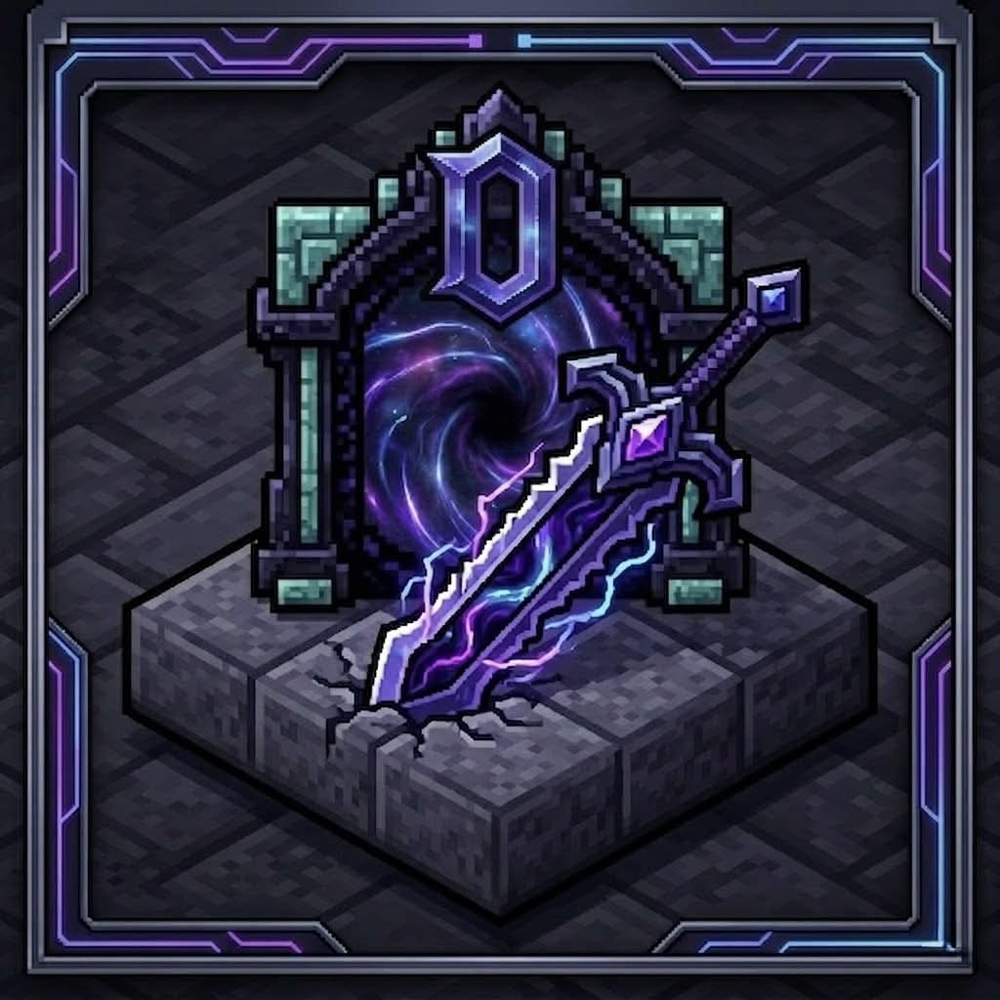

🛠 MAINTENANCEMaintenance en cours
Le site de DonjonMC est temporairement indisponible le temps de quelques améliorations. Reviens dans un instant, l'aventure t'attend.
Un univers RPG inspiré de Solo Leveling sur Minecraft. Affronte les donjons, maîtrise la magie, gravis les rangs, de E à National.
Installez le modpack via CurseForge. Tout est pré-configuré, aucun réglage manuel nécessaire.
→Ouvrez le launcher CurseForge, sélectionnez le profil DonjonMC et lancez le jeu.
→Allez dans Multijoueur → Ajouter un serveur, entrez l'IP et plongez dans le donjon.
385 mods sur NeoForge 1.21.1. Utilisez le bouton ci-dessous pour tout installer d'un coup, ou cliquez sur chaque mod pour le télécharger manuellement.
Toutes les commandes disponibles sur DonjonMC. Cliquez sur une commande pour la copier.
Actualités, mises à jour et événements du serveur.
modsGuide complet du mod DonjonMC, un RPG inspiré de Solo Leveling. Chaque section se déplie au clic.
Vous démarrez niveau 0 avec 5 cœurs. À chaque passage de niveau : soin à 100%, malus retirés, +2 points de compétences, +0,25 cœur maximum. L'XP requise est exponentielle.
| Rang | Niveaux |
|---|---|
| E | 0–9 |
| D | 10–19 |
| C | 20–29 |
| B | 30–39 |
| A | 40–59 |
| S | 60–79 |
| National | 80+ |
| Stat | Effets |
|---|---|
| Force | Dégâts de mêlée et santé max |
| Agilité | Vitesse de déplacement : toggle via /donjonmc speed |
| Vitalité | Santé max et résistance aux dégâts |
| Intelligence | Mana max (+5/point) et dégâts de sorts |
| Sens | Perception : détection ennemis et loots |
▎ Atteindre 20 points dans une stat débloque un sort actif unique lié à cette stat.
Les sorts utilisent Iron's Spellbooks. Chaque sort arrive sous forme de parchemin : fais un clic droit pour l'apprendre.
| Nv. | Sort | École | Effet |
|---|---|---|---|
| 10 | Onde Primitive | Évocation | Repousse + endommage tous dans 5–8 blocs |
| 20 | Flamme du Donjon | Feu | Enflamme l'ennemi le plus proche (20 blocs) : 8–36 sec d'ignition |
| 30 | Tempête Givrée | Glace | Lenteur II–IV + dégâts sur ennemis dans 8–17 blocs |
| 40 | Foudre du Chasseur | Foudre | Frappe 1 à 6 ennemis proches (30 blocs) d'éclairs |
| 60 | Voile des Ténèbres | Ender | Wither + Cécité + Lenteur IV sur tous proches : légendaire, CD 60 sec |
Chaque jour Minecraft, Le Système assigne 4 quêtes (2 Faciles, 1 Normale, 1 Difficile). Vous avez 2 heures IRL pour toutes les compléter.
| Difficulté | Récompense XP |
|---|---|
| Facile | 150 XP |
| Normale | 350 XP |
| Difficile | 700 XP |
| Toutes complétées | +2 points de compétences bonus |
44 types de quêtes : tuer des mobs, compléter des donjons, récolter, crafter, survivre une nuit...
Si le timer expire avant que toutes les quêtes soient complétées, Le Système vous téléporte dans une dimension de punition. Un Sand Worm vous attend (60 PV, 8 dégâts, 10 armure). Survivez 15 minutes.
| Résultat | Conséquence |
|---|---|
| 🟢 Survie | Retour à votre position dans l'Overworld |
| 🔴 Mort | Perte de 1–3 points de stats aléatoires + retour Overworld |
Des portails colorés apparaissent aléatoirement dans l'Overworld (annoncés dans le chat). Le chef du groupe fait clic droit pour entrer : tous les membres dans un rayon de 10 blocs sont téléportés avec lui.
| Rang | Couleur | Min. | PV Boss | XP | Temps |
|---|---|---|---|---|---|
| D | Bleu | 1 | 200 | 800 | 45 min |
| C | Vert | 1 | 500 | 2 000 | 30 min |
| B | Violet | 1 | 1 000 | 5 000 | 25 min |
| A | Orange | 1 | 2 000 | 12 000 | 20 min |
| S | Rouge | 4 | 4 000 | 30 000 | 15 min |
▎ Double Donjon secret : les donjons D et C ont 1% de chance de mener au Temple de Cartenon. L'XP est divisée équitablement, avec un bonus ×1,5 si vous avez 2+ rangs en dessous du joueur le plus haut.
Utilisez /donjonmc trial. Battez 3 zombies, 2 squelettes et un Wither Skeleton boss. Votre classe est attribuée selon votre stat la plus haute à la victoire.
Absorber les dégâts · protéger l'équipe
Burst DPS · élimination ciblée
DPS de zone · ×1,5 mana
Support · soin de zone
| Commande | Action |
|---|---|
/raid create | Créer un groupe (vous devenez chef) |
/raid invite <joueur> | Inviter un joueur (chef uniquement) |
/raid accept | Accepter une invitation |
/raid leave | Quitter le groupe |
/raid disband | Dissoudre le groupe (chef) |
/raid role <rôle> | vanguard · striker · support · porter |
modsRésumé des fonctionnalités joueurs : commandes, protections, groupes et mécaniques passives.
| Commande | Description | Cooldown |
|---|---|---|
/sethome <nom> | Enregistre une position (Overworld uniquement, max 3 homes) | — |
/home [nom] | Téléportation à un home enregistré | 30s |
/back | Retour à la position précédente (avant TP) | 10s |
/warp [nom] | Téléportation vers un warp public | 10s |
/tpa <joueur> | Demande de téléportation vers un joueur | 60s |
/tpaccept | Accepter une demande TPA | — |
/tpdeny | Refuser une demande TPA | — |
▎ Les TPA et demandes expirent automatiquement après 60 secondes.
| Commande | Description |
|---|---|
/lock | Verrouille/déverrouille le bloc regardé (coffres, portes…) |
/trust <joueur> | Donne accès à ses blocs verrouillés à un autre joueur |
/untrust <joueur> | Retire cet accès |
/lockinfo | Affiche propriétaire et joueurs de confiance d'un bloc |
▎ Les membres d'un même groupe avec GroupTrust activé héritent automatiquement de l'accès.
| Commande | Description |
|---|---|
/mail <joueur> <msg> | Message privé (si le destinataire l'accepte) |
/r <message> | Répondre au dernier message reçu |
/ignore <joueur> | Ignorer les messages d'un joueur |
/unignore <joueur> | Arrêter d'ignorer un joueur |
▎ Taper @g <message> dans le chat envoie un message uniquement aux membres de son groupe.
| Commande | Description |
|---|---|
/deal <joueur> | Proposer un échange d'items à un joueur |
/dealaccept | Accepter la demande d'échange |
/dealdeny | Refuser la demande d'échange |
▎ Interface graphique : les deux joueurs doivent valider. Si un joueur se déconnecte, les items sont automatiquement restitués.
| Commande | Description |
|---|---|
/groupaccept | Accepter une invitation de groupe |
/groupdeny | Refuser une invitation de groupe |
Fonctionnalités accessibles via /menu :
@g| Commande | Description |
|---|---|
/chest | Ouvre un coffre virtuel personnel (9 slots) persistant |
/afk | Toggle manuellement le mode AFK |
▎ En mode AFK : titre à l'écran + protection contre les monstres et autres joueurs. Le mode s'active aussi automatiquement après inactivité.
Interface graphique complète accessible via /menu :
/build à nouveau) : inventaire, XP, effets et position d'entrée restaurésCes mécaniques s'appliquent automatiquement si activées côté serveur :
| Fonctionnalité | Effet |
|---|---|
| Tree Capitator | Casser un tronc à la hache abat tout l'arbre |
| Fast Leaf Decay | Les feuilles disparaissent rapidement après la coupe |
| Right-Click Harvest | Clic droit sur une culture mûre la récolte et replante |
| Double Door | Ouvrir une porte ouvre automatiquement la porte adjacente |
| Proportional Sleep | Le cycle jour/nuit avance si 30% des joueurs dorment |
| Dispenser Harvest | Un distributeur avec une houe récolte les cultures alentour |
| PvP | Activé ou désactivé globalement |
| Protection AFK | Les joueurs AFK ne reçoivent pas de dégâts |
| Commande | Description |
|---|---|
/seen <joueur> | Voir quand un joueur s'est connecté pour la dernière fois |
/report [message] | Envoyer un signalement aux admins (interface ou texte direct) |
▎ Le rapport est envoyé aux admins connectés avec un webhook Discord si configuré.
Les questions qui reviennent le plus souvent. Si la tienne n'est pas là, contacte un admin.
Le plus simple est CurseForge — il installe le modpack en un clic et gère les mises à jour automatiquement. Si tu préfères éviter CurseForge, tu peux utiliser ATLauncher ou Prism Launcher avec une instance NeoForge 1.21.1 et le dossier mods téléchargé manuellement depuis l'onglet Actualités.
Lance le modpack DonjonMC depuis CurseForge, puis dans le menu Minecraft : Multijoueur → Ajouter un serveur → colle l'IP affichée en haut de cette page. Assure-toi d'avoir aussi installé les 2 mods personnalisés (voir onglet Mods Requis).
DonjonMC et Dashboard Admin sont des mods développés spécifiquement pour ce serveur. Ils ne sont pas publiés sur CurseForge. Télécharge-les depuis les liens dans l'onglet Mods Requis et dépose-les dans le dossier mods du modpack.
Dans l'ordre :
mods.crash-reports/latest.txt à un admin.Minimum 6 Go pour jouer correctement. Avec 8 Go tu auras moins de micro-freezes. Ne dépasse pas 12 Go sauf si tu as 32 Go de RAM — allouer trop de mémoire peut causer des lags de garbage collection.
Dans CurseForge : roue dentée → Paramètres → Minecraft → allocation mémoire.
Regarde le bloc que tu veux protéger et tape /lock. Pour donner l'accès à un ami : /trust <joueur>. Pour voir qui a accès : /lockinfo. Tout est gérable via /menu aussi.
Le PvP est configurable par les admins — son état peut changer selon les événements. Vérifie avec /menu ou demande en jeu. En mode AFK tu es protégé des dégâts dans tous les cas.
En jeu : /report [message] envoie un signalement immédiat. Hors jeu, contacte directement un admin via Discord. Pour les bugs du site ou du modpack, ouvre une issue sur le dépôt GitHub.
Nouvel article